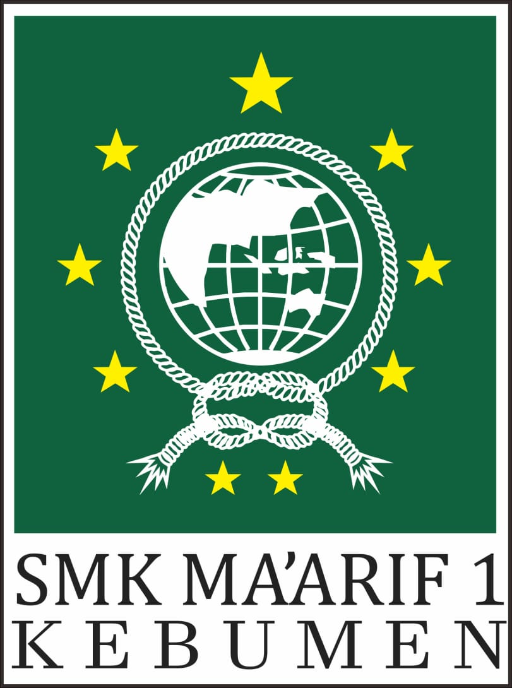

SMK Ma'arif 1 KebumenBerkarakter Berinovasi BerprestasiBeranda Profil Jurusan Fasilitas |
|
SMK Ma’arif 1 berdiri sejak 14 Maret 1990 merupakan salah satu Sekolah Kejuruan dibawah naungan PC.LP Ma’arif Nahdlatul Ulama. Program Keahlian yang dimiliki SMK Ma’arif 1 Kebumen meliputi :Kompetensi Keahlian Kendaraan Ringan (Otomotif) Kompetensi Keahlian Audio Video, Elektronika Industri, Multimedia dan Akomodasi Perhotelan (Pariwisata). Pada tahun 2007 SMK Ma’arif 1 Kebumen telah bersertifikat menggunakan Manajemen yang diakui dan mendapatkan sertifikat ISO 9001 : 2000 dan sekarang berubah menjadi SMM ISO 9001 : 2008 dari PT TUV International Indonesiayang berkantor induk di Jerman. Dengan perkembangannya di bidang Sarana Prasarana maupun kepercayaan masyarakat yang cukup tinggi terhadap SMK Ma’arif 1 Kebumen, maka terhitung sejak 15 Juli 2008 diberi kepercayaan oleh Pemerintah sebagai Sekolah yang berstatus Rintisan Sekolah Berstandar Internasional (RSBI) dengan SK. Direktur Pembinaan SMK Dirjend Dikdasmen No. 3084/C5.3/Kep/KU/2008. Untuk memenuhi sarana prasarana pembelajaran SMK Ma’arif 1 Kebumen memiliki 3 Gedung untuk proses belajar mengajar : 1. Gedung Utama beralamat di Jl. Kusuma No. 75 Kebumen, Telp. (0287) 383744, Fax. (0287) 383744. 2. Gedung Praktik beralamat di Jl. HM. Sarbini No. 191 Kebumen. 3. Unit Produksi/Bisnis Center beralamat di Jl. Pemuda Kebumen. |